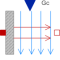

ConvectionLumped thermal element for heat convection (Q_flow = Gc*dT) |

|
Information
This information is part of the Modelica Standard Library maintained by the Modelica Association.
This is a model of linear heat convection, e.g., the heat transfer between a plate and the surrounding air; see also: ConvectiveResistor. It may be used for complicated solid geometries and fluid flow over the solid by determining the convective thermal conductance Gc by measurements. The basic constitutive equation for convection is
Q_flow = Gc*(solid.T - fluid.T);
Q_flow: Heat flow rate from connector 'solid' (e.g., a plate)
to connector 'fluid' (e.g., the surrounding air)
Gc = G.signal[1] is an input signal to the component, since Gc is nearly never constant in practice. For example, Gc may be a function of the speed of a cooling fan. For simple situations, Gc may be calculated according to
Gc = A*h A: Convection area (e.g., perimeter*length of a box) h: Heat transfer coefficient
where the heat transfer coefficient h is calculated from properties of the fluid flowing over the solid. Examples:
Machines cooled by air (empirical, very rough approximation according to R. Fischer: Elektrische Maschinen, 10th edition, Hanser-Verlag 1999, p. 378):
h = 7.8*v^0.78 [W/(m2.K)] (forced convection)
= 12 [W/(m2.K)] (free convection)
where
v: Air velocity in [m/s]
Laminar flow with constant velocity of a fluid along a flat plate where the heat flow rate from the plate to the fluid (= solid.Q_flow) is kept constant (according to J.P.Holman: Heat Transfer, 8th edition, McGraw-Hill, 1997, p.270):
h = Nu*k/x;
Nu = 0.453*Re^(1/2)*Pr^(1/3);
where
h : Heat transfer coefficient
Nu : = h*x/k (Nusselt number)
Re : = v*x*rho/mue (Reynolds number)
Pr : = cp*mue/k (Prandtl number)
v : Absolute velocity of fluid
x : distance from leading edge of flat plate
rho: density of fluid (material constant
mue: dynamic viscosity of fluid (material constant)
cp : specific heat capacity of fluid (material constant)
k : thermal conductivity of fluid (material constant)
and the equation for h holds, provided
Re < 5e5 and 0.6 < Pr < 50
Connectors (3)
| Gc |
Type: RealInput Description: Signal representing the convective thermal conductance in [W/K] |
|
|---|---|---|
| solid |
Type: HeatPort_a |
|
| fluid |
Type: HeatPort_b |
Used in Examples (10)
|
Modelica.Mechanics.MultiBody.Examples.Elementary
Demonstrate the modeling of heat losses |
|
|
Modelica.Mechanics.Rotational.Examples
Demonstrate the modeling of heat losses |
|
|
Modelica.Mechanics.Translational.Examples
Demonstrate the modeling of heat losses |
|
|
Modelica.Thermal.FluidHeatFlow.Examples
Simple cooling circuit |
|
|
Modelica.Thermal.FluidHeatFlow.Examples
Cooling circuit with parallel branches |
|
|
Modelica.Thermal.FluidHeatFlow.Examples
Indirect cooling circuit |
|
|
Modelica.Thermal.FluidHeatFlow.Examples
Cooling circuit with pump and valve |
|
|
Modelica.Thermal.FluidHeatFlow.Examples
Cooling circuit with drop out of pump |
|
|
Modelica.Thermal.FluidHeatFlow.Examples
Cooling circuit with parallel branches and drop out of pump |
|
|
Modelica.Thermal.HeatTransfer.Examples
Second order thermal model of a motor |